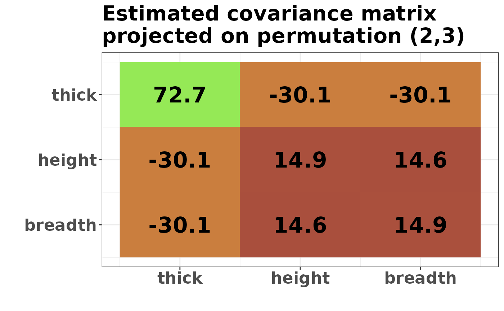

The problem
Quite often, we have too little data to perform valid inferences. Consider the situation with multivariate Gaussian distribution, where we have few observations compared to the number of variables. For example, that’s the case for graphical models used in biology or medicine. In such a setting, the usual way of finding the covariance matrix (the maximum likelihood method) isn’t statistically applicable. What now?
Invariance by permutation
Sometimes, the interchange of variables in the vector does not change its distribution. In the multivariate Gaussian case, it would mean that they have the same variances and covariances with other respective variables. For instance, in the following covariance matrix, variables X1 and X3 are interchangeable, meaning that vectors (X1, X2, X3) and (X3, X2, X1) have the same distribution.

Now, we can state this interchangeability property in terms of permutations. In our case, the distribution of (X1, X2, X3) is invariant by permutation (, ), or in cyclic form . This is equivalent to saying that swapping the first with the third row and then swapping the first and third columns of the covariance matrix results in the same matrix. Then we say that this covariance matrix is invariant by permutation.
Of course, in the samples collected in the real world, no perfect equalities will be observed. Still, if the respective values in the (poorly) estimated covariance matrix were close, adopting a particular assumption about invariance by permutation would be a reasonable step.
Package gips
We propose creating a set of constraints on the covariance matrix to use the maximum likelihood method. The constraint we consider is - none other than - invariance under permutation symmetry.
This package provides a way to find a reasonable permutation
to be used as a constraint in covariance matrix estimation. In this
case, reasonable means maximizing the Bayesian posterior
distribution when using a Wishart-like distribution on symmetric,
positive definite matrices as a prior. The idea, exact formulas, and
algorithm sketch are explored in another vignette that can be accessed
by vignette("Theory", package="gips") or on its pkgdown
page.
For an in-depth analysis of the package performance, capabilities,
and comparison with other packages, see the article “Learning
permutation symmetries with gips in R” by gips’ developers
Adam Chojecki, Paweł Morgen, and Bartosz Kołodziejek, Journal of Statistical
Software.
Practical example
Let’s examine 12 books’ thick, height, and breadth data:
We suspect books from this dataset were printed with aspect ratio as in popular A-series paper size. Therefore, we can use this expert knowledge in the analysis and unify the data for height and width:
Z$height <- Z$height / sqrt(2)Now, let’s plot the data:
number_of_observations <- nrow(Z) # 12
p <- ncol(Z) # 3
S <- cov(Z)
round(S, 1)
#> thick height breadth
#> thick 72.7 -28.5 -31.7
#> height -28.5 12.7 14.6
#> breadth -31.7 14.6 17.2
g <- gips(S, number_of_observations)
plot_cosmetic_modifications(plot(g, type = "heatmap")) +
ggplot2::ggtitle("Standard, MLE estimator\nof a covariance matrix")
We can see similarities between columns 2 and 3, representing the book’s height and breadth. In particular, the covariance between [1,2] is very similar to [1,3], and the variance of [2] is similar to the variance of [3]. Those are not surprising, given the data interpretation (after the rescaling of height that we did).
Let’s see what the gips will tell about this data:
g_map <- find_MAP(g,
optimizer = "brute_force",
return_probabilities = TRUE, save_all_perms = TRUE
)
#> ================================================================================
#> ================================================================================
#> ================================================================================
g_map
#> The permutation (2,3):
#> - was found after 5 posteriori calculations;
#> - is 1.305 times more likely than the () permutation.
get_probabilities_from_gips(g_map)
#> (2,3) () (1,3) (1,2,3) (1,2)
#> 0.566078057717 0.433908667868 0.000006728772 0.000004683290 0.000001862353find_MAP found the symmetry represented by permutation
(2,3).
plot_cosmetic_modifications(plot(g_map, type = "heatmap"))
round(project_matrix(S, g_map), 1)
#> thick height breadth
#> thick 72.7 -30.1 -30.1
#> height -30.1 14.9 14.6
#> breadth -30.1 14.6 14.9The result depends on two input parameters, delta and
D_matrix. By default, they are set to 3 and
diag(p) * d, respectively, where
d = mean(diag(S)). The method is not scale-invariant, so we
recommend running gips for different values of D_matrix of
the form D_matrix = d * diag(p), where d
).
The impact analysis of those can be read in [2] in section 3.2.
Hyperparameter’s influence.
Theoretic example
library(gips)
toy_example_data
#> [,1] [,2] [,3] [,4] [,5]
#> [1,] -5.554883 7.466693 2.444659 -5.757642 -9.374783
#> [2,] -11.330708 1.700968 2.756588 -5.623130 -8.560550
#> [3,] -10.579451 3.914784 2.327188 -7.085606 -10.115170
#> [4,] -12.634411 4.881232 1.248641 -8.067525 -11.114509
dim(toy_example_data)
#> [1] 4 5
number_of_observations <- nrow(toy_example_data) # 4
p <- ncol(toy_example_data) # 5
S <- cov(toy_example_data)
sum(eigen(S)$values > 0.00000001)
#> [1] 3Note that the rank of the S matrix is 3, despite the
number_of_observations being 4. This is because
cov() estimated the mean on every column to compute
S.
We want to find reasonable additional assumptions on S
to make it easier to estimate.

Looking at the plot, one can see the similarities between columns 3, 4, and 5. They have similar variance and covariance to each other. The 3 and 5 have similar covariance with columns 1 and 2. However, the 4 is also close.
Let’s see if gips will find the relationship:
g_map <- find_MAP(g,
optimizer = "brute_force",
return_probabilities = TRUE, save_all_perms = TRUE
)
#> ================================================================================
#> ================================================================================
#> ================================================================================
plot(g_map, type = "heatmap")
gips decided that
was the most reasonable assumption. Let’s see how much better it is:
g_map
#> The permutation (3,4,5):
#> - was found after 67 posteriori calculations;
#> - is 3.63 times more likely than the () permutation.This assumption is over 3 times more believable than making no assumption. Let’s examine how reasonable are other possible assumptions:
get_probabilities_from_gips(g_map)
#> (3,4,5) (2,4,5) (1,2)(3,4,5) (2,3,5,4) (4,5) (3,5)
#> 0.061991931 0.056959514 0.048479131 0.040410788 0.038027185 0.037829891
#> (3,4) (2,3,4,5) (2,4,3,5) (2,4)(3,5) (2,3,5) (1,2)(3,5)
#> 0.035085538 0.034415530 0.033895061 0.031448291 0.029438098 0.026938644
#> (1,2)(3,4) (2,5)(3,4) (1,2)(4,5) (2,3,4) (2,5) (2,4)
#> 0.026167559 0.025906388 0.025384163 0.024145834 0.024081717 0.020399181
#> (1,2,4)(3,5) (1,4,2,5) (2,3)(4,5) () (1,2,3,5,4) (1,2,5,4)
#> 0.019323499 0.018904417 0.018141398 0.017079855 0.016588093 0.016298998
#> (1,2,5)(3,4) (1,2,4,5) (1,2) (1,4)(2,3,5) (2,3) (1,2,3,4,5)
#> 0.015996810 0.013635218 0.013223117 0.012292494 0.011350938 0.010572077
#> (1,2,5,3,4) (1,2,3)(4,5) (1,2,4,5,3) (1,4)(2,5) (1,3)(2,4,5) (1,2,4,3,5)
#> 0.010280022 0.010147160 0.009968266 0.009810562 0.009448103 0.009398996
#> (1,2,3,5) (1,2,4) (1,2,5) (1,5)(2,3,4) (1,3,2,5) (1,2,3,4)
#> 0.009168309 0.009011297 0.008941143 0.008833158 0.008315048 0.008279742
#> (1,2,5,4,3) (1,3,2,4) (1,4)(3,5) (1,5)(2,4) (1,2,5,3) (1,2,3)
#> 0.008007561 0.006254947 0.005565898 0.005389584 0.004968273 0.004515910
#> (1,4)(2,3) (1,5)(2,3) (1,2,4,3) (1,3)(4,5) (1,5)(3,4) (1,3,4)(2,5)
#> 0.004287814 0.004249572 0.003919107 0.003875914 0.003868923 0.003383014
#> (1,4) (1,3)(2,5) (1,5) (1,3,5)(2,4) (1,3) (1,4,5)
#> 0.003272443 0.002762345 0.002701743 0.002404967 0.002143353 0.002045112
#> (1,4,5)(2,3) (1,3,4) (1,3)(2,4) (1,3,5) (1,3,5,4) (1,4,3,5)
#> 0.001893502 0.001828460 0.001732156 0.001582799 0.001166460 0.001118505
#> (1,3,4,5)
#> 0.001048474We see that assumption is the most likely with a posterior probability. 21 possible permutations are more likely than id.
Remember that the n0 could still be too big for your
data. In this example, the assumptions with transpositions (like
)
would yield the n0
,
which would be insufficient for us to estimate covariance correctly. The
assumption
will be just right:
summary(g_map)$n0 # n0 = 4 <= 4 = number_of_observations
#> [1] 4
S_projected <- project_matrix(S, g_map)
S_projected
#> [,1] [,2] [,3] [,4] [,5]
#> [1,] 9.601087 5.4152903 1.4727442 1.4727442 1.4727442
#> [2,] 5.415290 5.7077767 -0.4783693 -0.4783693 -0.4783693
#> [3,] 1.472744 -0.4783693 0.9870649 0.8600285 0.8600285
#> [4,] 1.472744 -0.4783693 0.8600285 0.9870649 0.8600285
#> [5,] 1.472744 -0.4783693 0.8600285 0.8600285 0.9870649
sum(eigen(S_projected)$values > 0.00000001)
#> [1] 5Now, the estimated covariance matrix is of full rank (5).
Further reading
- To learn more about the available optimizers in
find_MAP()and how to use those, seevignette("Optimizers", package="gips")or its pkgdown page. - To learn more about the math and theory behind the
gipspackage, seevignette("Theory", package="gips")or its pkgdown page. - For an in-depth analysis of the package performance, capabilities,
and comparison with other packages, see the article “Learning
permutation symmetries with gips in R” by
gipsdevelopers Adam Chojecki, Paweł Morgen, and Bartosz Kołodziejek, Journal of Statistical Software.